Candidate List 20260703Last night — ZTF: 3,154 passed basic cuts (75 young) · LSST: 0 passed basic cuts (0 young)Previous Day Next Day
Section 1: New Sources (age<1d) Section 2: Old (1-5d) sources observed last nightplaceholder
Section 1: New Afterglow/FBOT Cands Last Night (1)
1. [ZTF] ZTF26abetmxa (Afterglow?) [Back to Top] [Share] [Trigger Swift] [Fritz Alert] [Fritz Source] [Lasair]RA, Dec: 350.97646, 51.43138 23h23m54.35s, 51d25m52.95sGalactic (l, b): 109.32036, -9.1122 ext(g-r) = 0.284

TESS: Sectors 17
PS1: 0 sources in 3 arcsec
LegacySurvey: 0 sources in 3 arcsec

Extinction-corrected gr color:
From alerts: -0.08 +/- 0.16 mag
Consistent with synchrotron, g-r>0!
Rise Rate:
g: 0.17 mag/day
r: 0.52 mag/day
Fade Rate:
Section 2: Older Sources Observed Last Night (12)
0. [ZTF] ZTF26abekjzj (Afterglow?FBOT?) [Back to Top] [Share] [Trigger Swift] [Fritz Alert] [Fritz Source] [Lasair]RA, Dec: 239.90437, 7.85036 15h59m37.05s, 7d51m1.30sGalactic (l, b): 18.52519, 41.5335 ext(g-r) = 0.044


TESS: Sectors [ 51 117]
PS1: 0 sources in 3 arcsec
LegacySurvey: 1 sources in 3 arcsec Closest: d = 3.34 arcsec, 220.4 deg (east of north) photoz=0.12 (68% bounds 0.01, 0.68), type=PSF peak abs mag = -20.32 (68% bounds -15.56, -24.66)

Extinction-corrected gr color:
From alerts: -0.13 +/- 0.2 mag
Extinction-corrected gi color:
From alerts: -0.56 +/- 99 mag
Extinction-corrected ri color:
From alerts: -0.45 +/- 0.24 mag
Consistent with synchrotron, g-r>0!
Rise Rate:
g: 0.44 mag/day
r: 0.32 mag/day
i: 0.06 mag/day
Fade Rate:
g: 0.22 mag/day
r: 0.16 mag/day
1. [ZTF] ZTF26abemmvh (Afterglow?) [Back to Top] [Share] [Trigger Swift] [Fritz Alert] [Fritz Source] [Lasair]RA, Dec: 282.06094, 57.70769 18h48m14.63s, 57d42m27.70sGalactic (l, b): 87.43335, 23.08429 ext(g-r) = 0.067

TESS: Sectors [ 15 16 17 18 19 20 21 22 23 24 26 40 41 47 48 49 50 51
52 53 54 55 56 57 58 59 60 73 74 75 76 77 78 79 80 81
81 82 83 84 86 117 118 119 120 121]
PS1: 0 sources in 3 arcsec
LegacySurvey: 1 sources in 3 arcsec Closest: d = 0.14 arcsec, 2.6 deg (east of north) photoz=1.12 (68% bounds 0.64, 1.4), type=PSF peak abs mag = -28.61 (68% bounds -27.12, -29.2)

Extinction-corrected gr color:
From alerts: -0.36 +/- 0.04 mag
Rise Rate:
g: 0.7 mag/day
r: 0.58 mag/day
Fade Rate:
g: 0.22 mag/day
r: 0.22 mag/day
2. [ZTF] ZTF26abemkvx (Afterglow?) (TNS: 2) [Back to Top] [Share] [Trigger Swift] [Fritz Alert] [Fritz Source] [Lasair]RA, Dec: 289.2679, 46.38841 19h17m4.30s, 46d23m18.26sGalactic (l, b): 77.6813, 15.16671 ext(g-r) = 0.098

TESS: Sectors [ 14 15 40 41 53 54 55 74 75 80 82 119 120]
PS1: 0 sources in 3 arcsec
LegacySurvey: 0 sources in 3 arcsec

Extinction-corrected gr color:
From alerts: -3.16 +/- 99 mag
Rise Rate:
g: 2.45 mag/day
r: 2.53 mag/day
Fade Rate:
g: 0.15 mag/day
r: 2.89 mag/day
3. [ZTF] ZTF26abeoyps (Afterglow?FBOT?) [Back to Top] [Share] [Trigger Swift] [Fritz Alert] [Fritz Source] [Lasair]RA, Dec: 291.16072, 50.75532 19h24m38.57s, 50d45m19.16sGalactic (l, b): 82.3524, 15.77423 ext(g-r) = 0.099

TESS: Sectors [ 14 15 54 55 56 74 75 76 80 81 82 83 119 120]
PS1: 1 source in 3 arcsec Closest: d = 5.14 arcsec photoz=0.13+/-0.01 peak abs mag = -19.83
LegacySurvey: 0 sources in 3 arcsec

Extinction-corrected gr color:
From alerts: -0.73 +/- 99 mag
Rise Rate:
g: 6.57 mag/day
Fade Rate:
g: 7.01 mag/day
4. [ZTF] ZTF26abepwdg (Afterglow?FBOT?) [Back to Top] [Share] [Trigger Swift] [Fritz Alert] [Fritz Source] [Lasair]RA, Dec: 17.0528, 15.82911 1h 8m12.67s, 15d49m44.78sGalactic (l, b): 128.83601, -46.85027 ext(g-r) = 0.101

TESS: Sectors [17 42 43 57 70 84]
SDSS (<15 kpc):Found SDSS phot-z: z=0.37; peak abs mag = -23.96
PS1: 0 sources in 3 arcsec
LegacySurvey: 1 sources in 3 arcsec Closest: d = 0.99 arcsec, 85.1 deg (east of north) photoz=1.41 (68% bounds 0.97, 2.12), type=PSF peak abs mag = -27.31 (68% bounds -26.29, -28.39)

Extinction-corrected gr color:
From alerts: -0.03 +/- 0.1 mag
Extinction-corrected gi color:
From alerts: -0.28 +/- 0.13 mag
Extinction-corrected ri color:
From alerts: -0.25 +/- 0.12 mag
Consistent with synchrotron, g-r>0!
Rise Rate:
r: 0.21 mag/day
i: 0.69 mag/day
Fade Rate:
i: 0.72 mag/day
5. [ZTF] ZTF26abeqruz (Afterglow?) [Back to Top] [Share] [Trigger Swift] [Fritz Alert] [Fritz Source] [Lasair]RA, Dec: 253.15105, 50.19339 16h52m36.25s, 50d11m36.21sGalactic (l, b): 77.04128, 39.24671 ext(g-r) = 0.027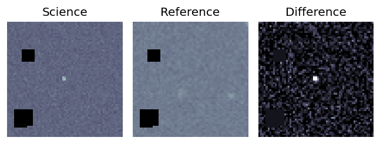
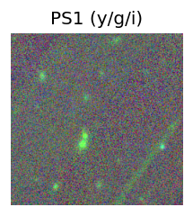
TESS: Sectors [ 24 25 26 50 51 52 53 77 79 117 118]
PS1: 0 sources in 3 arcsec
LegacySurvey: 1 sources in 3 arcsec Closest: d = 6.73 arcsec, 131.2 deg (east of north) photoz=0.54 (68% bounds 0.44, 0.69), type=PSF peak abs mag = -23.52 (68% bounds -22.97, -24.14)
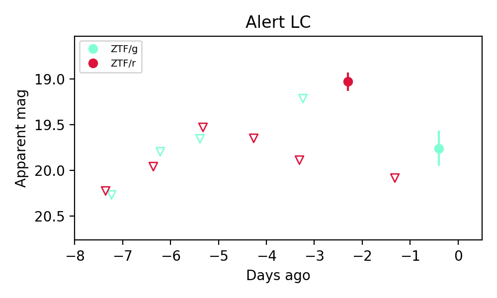
Rise Rate:
g: 0.08 mag/day
r: 0.85 mag/day
Fade Rate:
r: 1.07 mag/day
6. [ZTF] ZTF26abeqtrl (FBOT?) [Back to Top] [Share] [Trigger Swift] [Fritz Alert] [Fritz Source] [Lasair]RA, Dec: 249.82338, 34.02121 16h39m17.61s, 34d 1m16.36sGalactic (l, b): 55.72009, 41.09163 ext(g-r) = 0.023

TESS: Sectors [ 24 25 51 52 78 79 117]
SDSS (<15 kpc):Found SDSS phot-z: z=0.25; peak abs mag = -20.97
PS1: 0 sources in 3 arcsec
LegacySurvey: 1 sources in 3 arcsec Closest: d = 1.49 arcsec, 171.3 deg (east of north) photoz=0.05 (68% bounds 0.02, 0.09), type=SER peak abs mag = -16.98 (68% bounds -14.94, -18.46)

Extinction-corrected gr color:
From alerts: -0.23 +/- 0.25 mag
Consistent with synchrotron, g-r>0!
Rise Rate:
g: 0.07 mag/day
r: 0.36 mag/day
Fade Rate:
7. [ZTF] ZTF26abequis (Afterglow?) [Back to Top] [Share] [Trigger Swift] [Fritz Alert] [Fritz Source] [Lasair]RA, Dec: 263.99091, 54.51307 17h35m57.82s, 54d30m47.05sGalactic (l, b): 82.25053, 32.57266 ext(g-r) = 0.052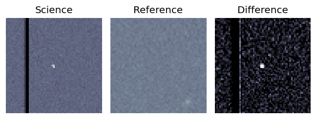
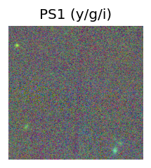
TESS: Sectors [ 14 16 17 18 20 21 23 24 25 26 40 41 47 48 50 51 52 53
54 55 56 57 58 59 60 73 74 75 77 78 80 81 82 83 84 85
86 117 118 118 119 120]
PS1: 0 sources in 3 arcsec
LegacySurvey: 1 sources in 3 arcsec Closest: d = 7.93 arcsec, 216.2 deg (east of north) photoz=0.85 (68% bounds 0.59, 1.07), type=REX peak abs mag = -25.48 (68% bounds -24.53, -26.1)
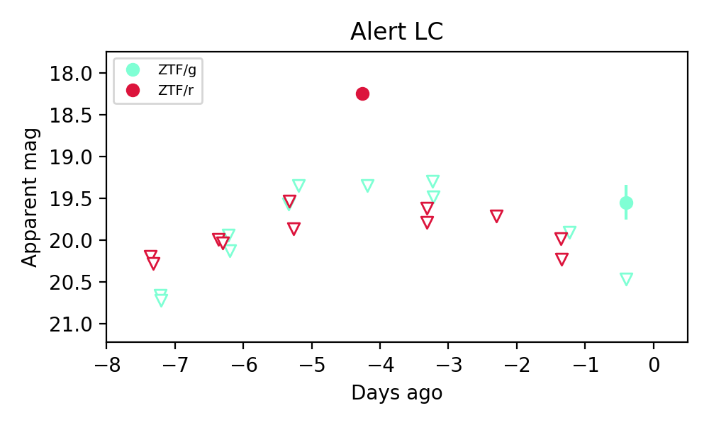
Extinction-corrected gr color:
From alerts: 1.05 +/- 99 mag
Rise Rate:
g: 0.17 mag/day
r: 1.62 mag/day
Fade Rate:
r: 1.63 mag/day
8. [ZTF] ZTF26abernyf (Afterglow?) [Back to Top] [Share] [Trigger Swift] [Fritz Alert] [Fritz Source] [Lasair]RA, Dec: 265.53184, 39.37598 17h42m7.64s, 39d22m33.51sGalactic (l, b): 64.84986, 29.61557 ext(g-r) = 0.046

TESS: Sectors [ 25 26 40 52 53 79 80 117 118]
NED (10 arcsec):Found NED spec-z: z=0.05; peak abs mag = -17.02
PS1: 0 sources in 3 arcsec
LegacySurvey: 1 sources in 3 arcsec Closest: d = 0.90 arcsec, 262.2 deg (east of north) photoz=0.15 (68% bounds 0.12, 0.21), type=SER peak abs mag = -19.39 (68% bounds -18.75, -20.12)

Extinction-corrected gr color:
From alerts: 0.33 +/- 99 mag
Rise Rate:
g: 0.19 mag/day
Fade Rate:
g: 0.63 mag/day
9. [ZTF] ZTF26aberwbx (FBOT?) [Back to Top] [Share] [Trigger Swift] [Fritz Alert] [Fritz Source] [Lasair]RA, Dec: 276.1814, 38.27651 18h24m43.54s, 38d16m35.43sGalactic (l, b): 66.10402, 21.32828 ext(g-r) = 0.033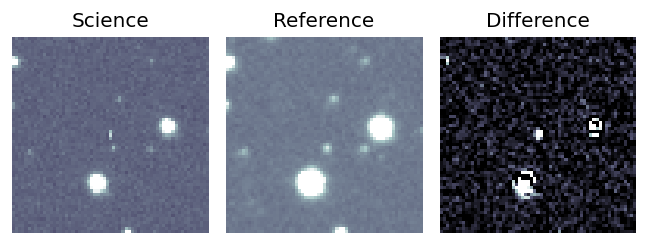
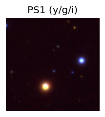
TESS: Sectors [ 26 40 53 54 74 80 81 118 119]
PS1: 0 sources in 3 arcsec
LegacySurvey: 1 sources in 3 arcsec Closest: d = 4.64 arcsec, 188.8 deg (east of north) photoz=0.19 (68% bounds 0.03, 0.73), type=PSF peak abs mag = -20.19 (68% bounds -16.16, -23.66)
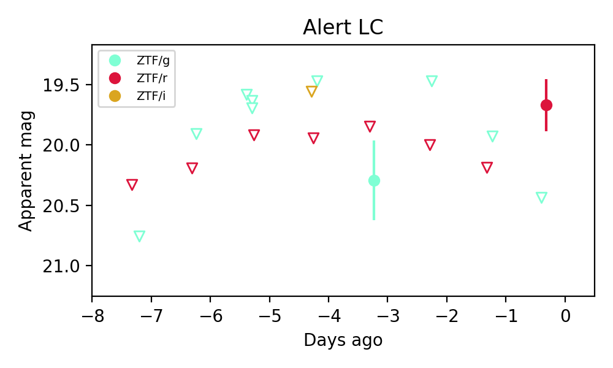
Extinction-corrected gr color:
From alerts: 0.73 +/- 99 mag
Rise Rate:
r: 0.51 mag/day
Fade Rate:
10. [ZTF] ZTF26abesjsh (FBOT?) [Back to Top] [Share] [Trigger Swift] [Fritz Alert] [Fritz Source] [Lasair]RA, Dec: 274.67604, 47.84729 18h18m42.25s, 47d50m50.25sGalactic (l, b): 75.78369, 25.0283 ext(g-r) = 0.046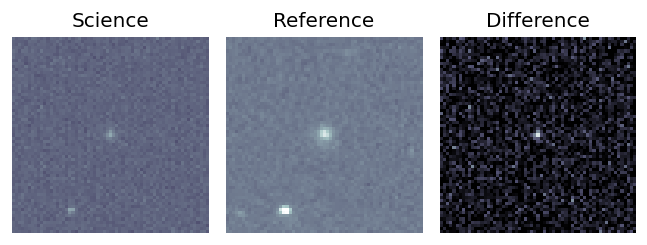
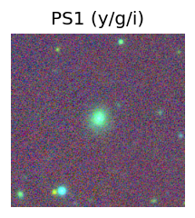
TESS: Sectors [ 25 26 40 41 52 53 54 74 79 80 81 117 118 119 120]
PS1: 0 sources in 3 arcsec
LegacySurvey: 1 sources in 3 arcsec Closest: d = 0.41 arcsec, 321.2 deg (east of north) photoz=0.2 (68% bounds 0.18, 0.23), type=DEV peak abs mag = -20.0 (68% bounds -19.8, -20.32)
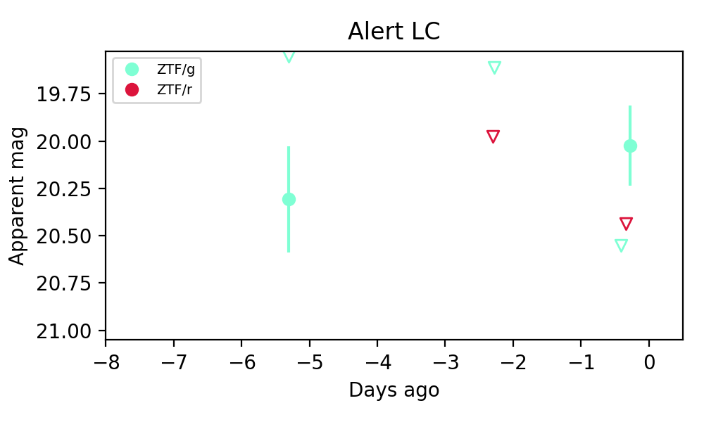
Extinction-corrected gr color:
From alerts: -0.46 +/- 99 mag
Rise Rate:
g: 3.97 mag/day
Fade Rate:
11. [ZTF] ZTF26abetlox (FBOT?) [Back to Top] [Share] [Trigger Swift] [Fritz Alert] [Fritz Source] [Lasair]RA, Dec: 41.97635, 36.70058 2h47m54.32s, 36d42m2.08sGalactic (l, b): 147.55356, -20.54117 ext(g-r) = 0.082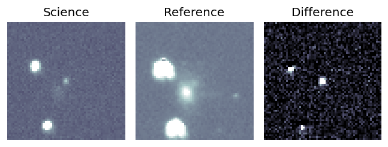
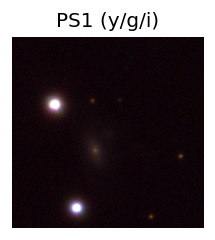
TESS: Sectors 18
NED (10 arcsec):Found NED spec-z: z=0.05; peak abs mag = -19.25
PS1: 1 source in 3 arcsec Closest: d = 0.97 arcsec photoz=0.06+/-0.03 peak abs mag = -19.74
LegacySurvey: 0 sources in 3 arcsec
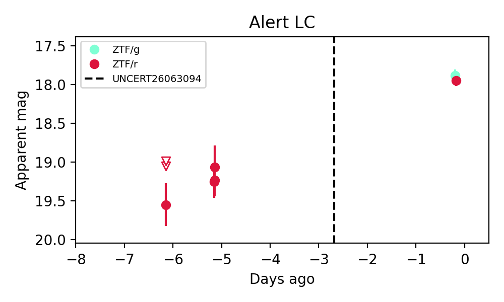
Extinction-corrected gr color:
From alerts: -0.15 +/- 0.1 mag
Rise Rate:
r: 0.26 mag/day
Fade Rate: